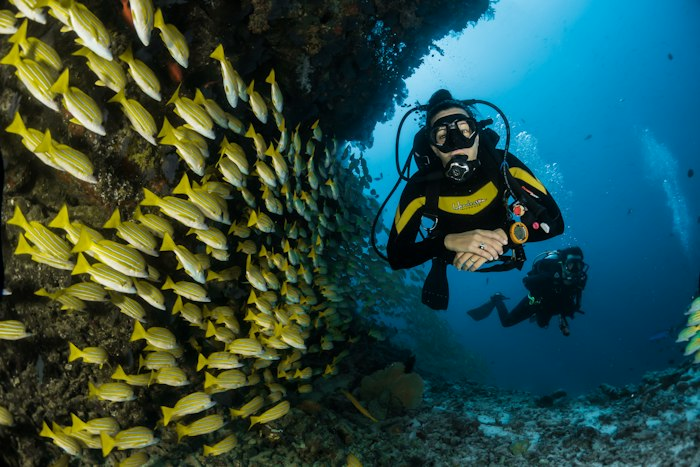

Filtreler, ısıtıcılar, aydınlatma süreleri ve standart akvaryum ölçü tablosu.
Akvaryum kurarken hacme uygun filtre ve ısıtıcı seçmek hayati önem taşır. Aşağıdaki tablodan standart akvaryum ölçüleri için gerekli donanımları inceleyebilirsiniz.
| Akvaryum Hacmi | Standart Ölçüler (En x Boy x Yükseklik) | Önerilen Isıtıcı Gücü | Gerekli Filtre Debisi | Uygun Balık Grubu |
|---|---|---|---|---|
| 30 Litre | 40 x 25 x 30 cm | 25 - 50 Watt | 120 - 150 L/h | Beta veya Karides |
| 60 Litre | 60 x 30 x 35 cm | 50 - 75 Watt | 240 - 300 L/h | Canlı Doğuranlar |
| 100 Litre | 80 x 35 x 40 cm | 100 Watt | 400 - 500 L/h | Tetra ve Bitkili Karma |
| 200 Litre | 100 x 40 x 50 cm | 200 Watt | 800 - 1000 L/h | Melek ve Diskus |

Filtre akvaryumun en önemli ekipmanıdır. Hem sudaki kaba pislikleri toplar hem de suyun oksijenlenmesini ve yararlı bakterilerin barınmasını sağlar.
Debi Kuralı: Filtrenin saatteki su çevirme kapasitesi (L/h), akvaryum hacminin en az 3 ila 4 katı olmalıdır. Örneğin 100 litrelik bir akvaryum için saatte en az 400 litre çeviren bir filtre gereklidir.
Filtre Çeşitleri: Küçük akvaryumlarda iç filtre veya şelale filtre yeterli olurken, 80-100 litre ve üzerindeki tanklarda sepetli dış filtreler biyolojik temizlik için çok daha başarılıdır.
Çalışma Süresi: Filtre asla geceleri kapatılmamalıdır. Kapatıldığında süngerdeki bakteriler oksijensizlikten ölür ve filtre tekrar açıldığında zehirli su akvaryuma basılır.
Tropikal balıklar için su sıcaklığının sabit kalması bağışıklık sistemi açısından hayatidir.
Watt Hesabı: Genel kural olarak her 1 litre akvaryum suyu için yaklaşık 1 Watt ısıtıcı gücü hesaplanır (50 litre için 50W, 100 litre için 100W ısıtıcı).
İdeal Sıcaklık: Çoğu tatlı su balığı için 24°C - 26°C arası idealdir. Ani 2-3 derecelik ısı düşüşleri balıklarda beyaz benek parazitini tetikler.
Termometre: Isıtıcının üzerindeki derece göstergesine tam güvenmek yerine akvaryumun karşı camına küçük bir cam termometre yapıştırıp her gün gözle kontrol etmek en güvenli yoldur.
Doğru aydınlatma süresi ve yeterli oksijen akvaryumun berrak kalmasını sağlar.
Işıklandırma Süresi: Işıkları sabah açıp geceye kadar açık bırakmak büyük bir hatadır. Günde 6-8 saatten fazla ışık camlarda ve kumda kontrolsüz yeşil yosun oluşumuna yol açar. Bir zaman ayarlı priz (timer) kullanarak her gün aynı saatte açılıp kapanmasını sağlayabilirsiniz.
Hava Motoru: Özellikle yazın su ısındıkça sudaki çözünmüş oksijen azalır. Bir hava motoru ve hava taşı bağlayarak su yüzeyinde baloncuklar oluşturmak balıkların rahat nefes almasını sağlar.
Berrak görünen bir su her zaman temiz su demek değildir.
Klor Tehlikesi: Musluk suyundaki klor balıkların solungaçlarına zarar verir. Su değişimlerinde ya suyu 2 gün önceden dinlendirin ya da su düzenleyici damla kullanın.
pH Dengesi: Çoğu karma tatlı su balığı için pH 6.8 ila 7.5 arası nötr değerler uygundur. Düzenli dip çekimi yapıldığında su dengesi kendiliğinden korunur.